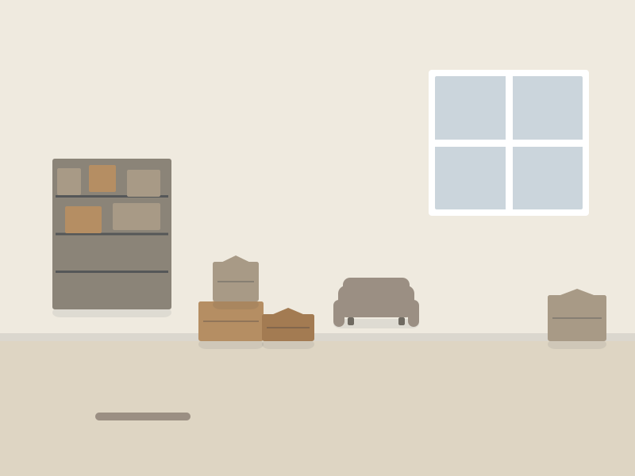
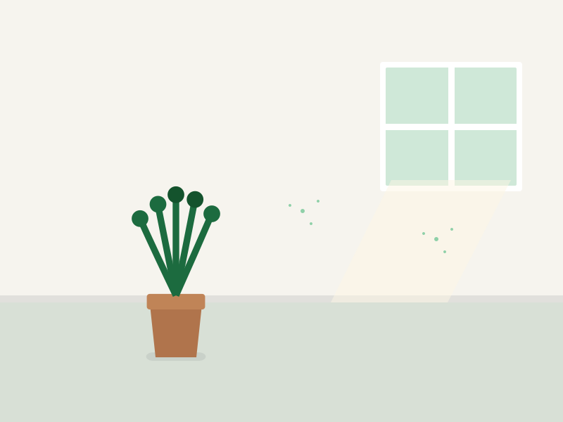
Strasbourg — Neudorf
Appartement 3 pièces
Illustration de démonstration — les photos réelles du chantier viendront ici
Type de bien, volume et durée : voici le format de nos comptes rendus de chantier. Les photographies avant/après seront ajoutées dès réception du lot photo de l'entreprise — nous n'utilisons pas d'images génériques à leur place.


Appartement 3 pièces
Illustration de démonstration — les photos réelles du chantier viendront ici
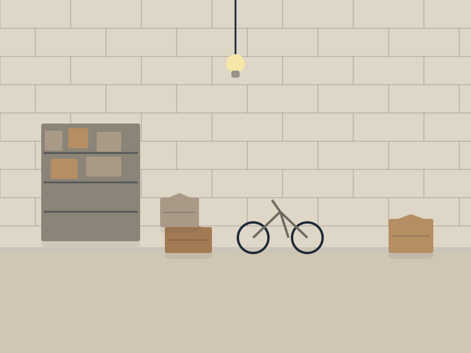
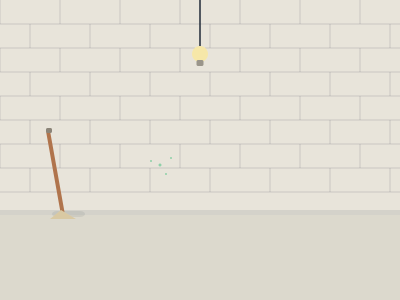
Cave et grenier
Illustration de démonstration — les photos réelles du chantier viendront ici
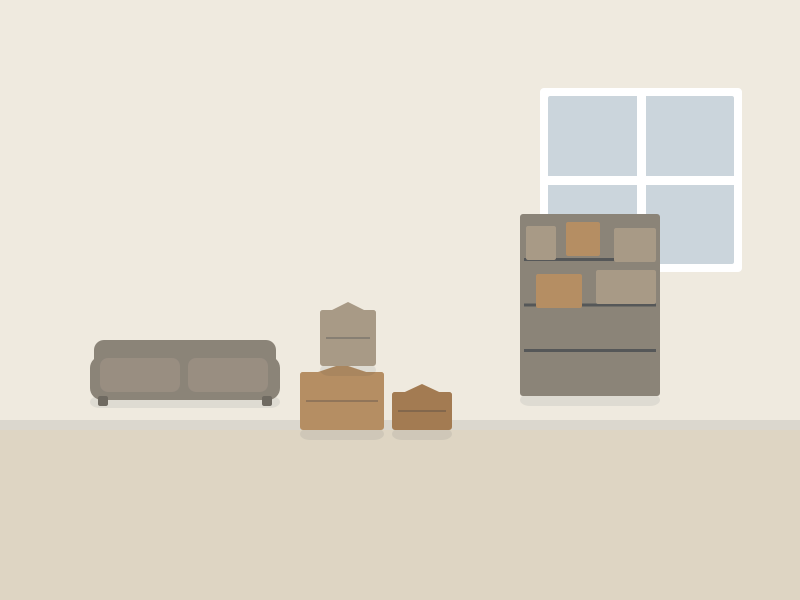
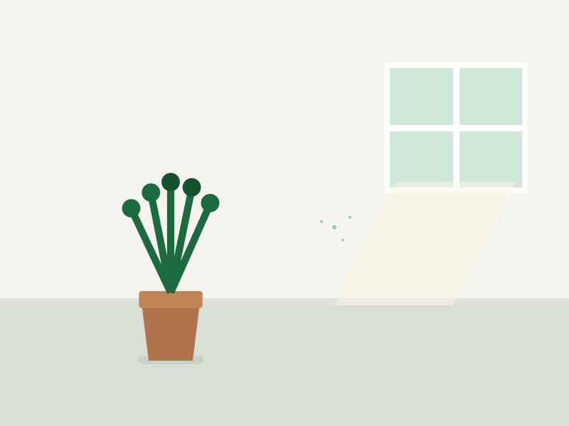
Maison complète
Illustration de démonstration — les photos réelles du chantier viendront ici
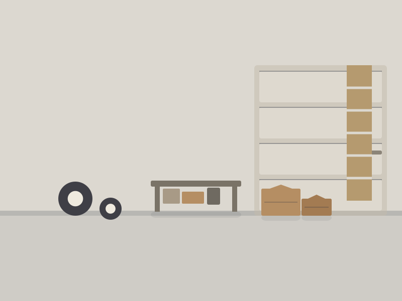
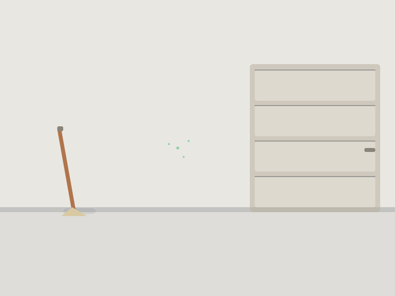
Garage et dépendance
Illustration de démonstration — les photos réelles du chantier viendront ici
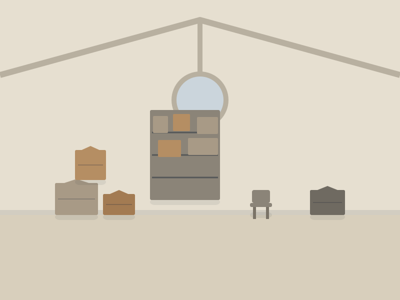
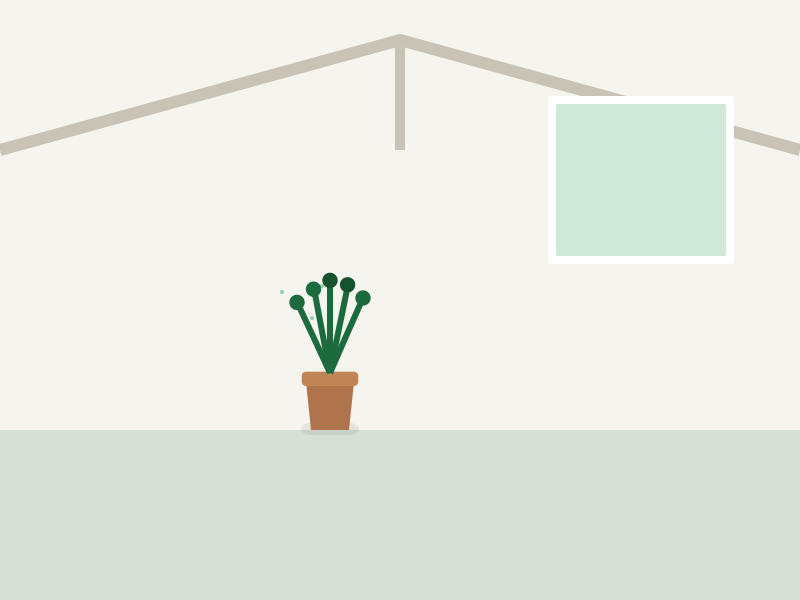
Succession, appartement
Illustration de démonstration — les photos réelles du chantier viendront ici

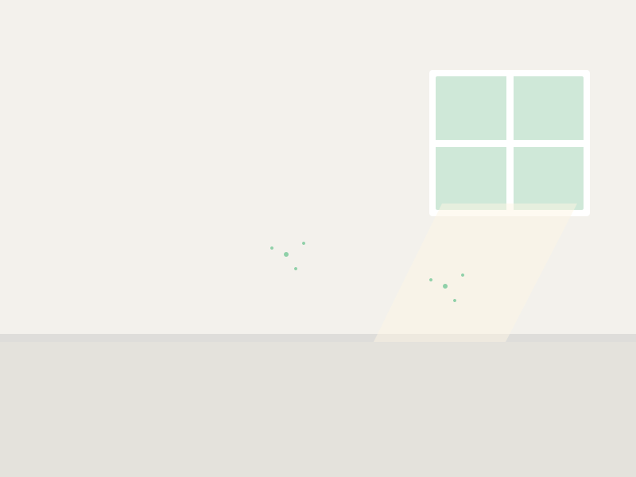
Local professionnel
Illustration de démonstration — les photos réelles du chantier viendront ici
Envoyez quelques photos et recevez une estimation. Nous vous répondons sous 24 h ouvrées.